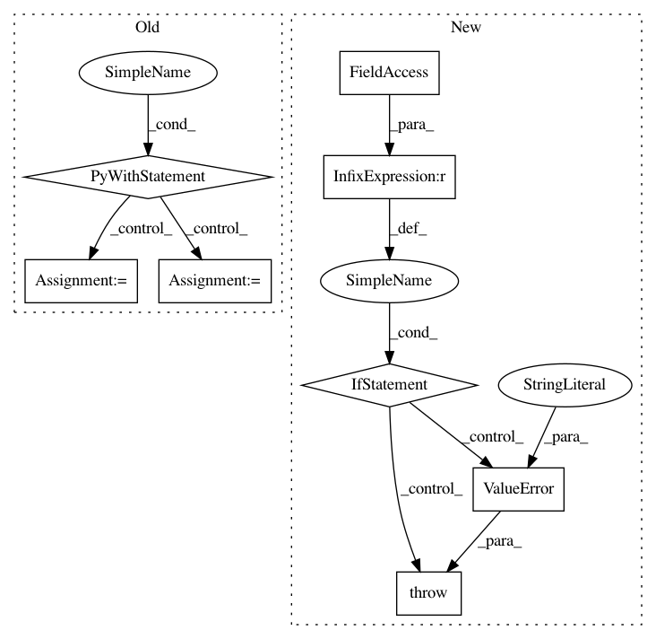

61063a28f6c389f1a92e4c64625dec930d83d1ed,kfac/python/ops/optimizer.py,KfacOptimizer,set_damping_adaptation_params,#KfacOptimizer#Any#Any#Any#Any#Any#Any#,176
Before Change
if self._adapt_damping:
raise ValueError("Damping adaptation parameters already set.")
with tf.variable_scope(self.get_name()):
self._adapt_damping = True
self._is_chief = is_chief
self._prev_train_batch = prev_train_batch
self._loss_fn = loss_fn
self._damping_adaptation_decay = damping_adaptation_decay
self._damping_adaptation_interval = damping_adaptation_interval
self._omega = (
self._damping_adaptation_decay**self._damping_adaptation_interval)
self._min_damping = min_damping
self._rho = tf.get_variable(
"rho", shape=(), dtype=tf.float32, trainable=False) // LM ratio.
self._prev_loss = tf.get_variable(
"prev_loss", shape=(), dtype=tf.float32, trainable=False)
self._q_model_change = tf.get_variable(
"q_model_change", shape=(), dtype=tf.float32, trainable=False)
self._damping = tf.get_variable(
"damping", initializer=self._damping_constant, trainable=False)
def get_cov_vars(self):
Returns all covaraiance varaiables.
return self._fisher_est.get_cov_vars()
After Change
if self._adapt_damping:
raise ValueError("Damping adaptation parameters already set.")
if self._momentum_type == "adam":
// This doesn"t work due to the way previous updates are retrieved using
// the stored velocity. It"s pure and simple engineering to fix it.
raise ValueError(""adam" type momentum not currently supported with "
"adaptive damping.")
def get_cov_vars(self):
Returns all covaraiance varaiables.
return self._fisher_est.get_cov_vars()
In pattern: SUPERPATTERN
Frequency: 3
Non-data size: 8
Instances
Project Name: tensorflow/kfac
Commit Name: 61063a28f6c389f1a92e4c64625dec930d83d1ed
Time: 2019-02-01
Author: jamesmartens@google.com
File Name: kfac/python/ops/optimizer.py
Class Name: KfacOptimizer
Method Name: set_damping_adaptation_params
Project Name: THUNLP-MT/THUMT
Commit Name: ea5fe95ffd6f31886c39219aac61c64b0cb8ba0b
Time: 2019-07-13
Author: cg847519328@163.com
File Name: thumt/bin/translator.py
Class Name:
Method Name: main
Project Name: maciejkula/spotlight
Commit Name: eef158f03c4ec9bf872a3e358d62a1fd21a73c35
Time: 2017-07-13
Author: maciej.kula@gmail.com
File Name: examples/movielens_cnn.py
Class Name:
Method Name: